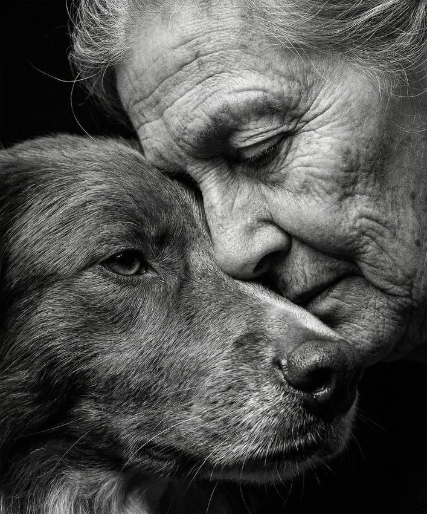
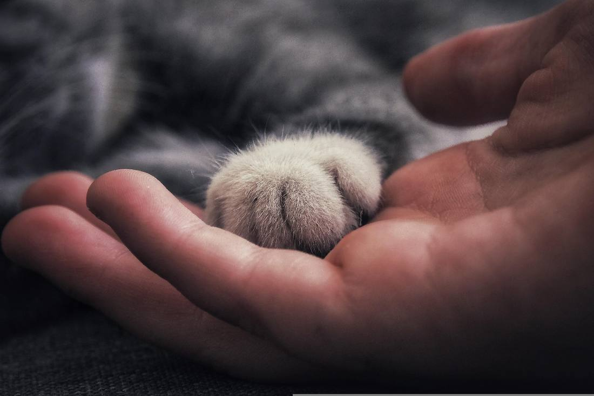
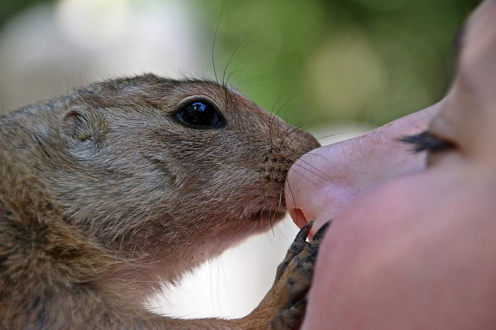
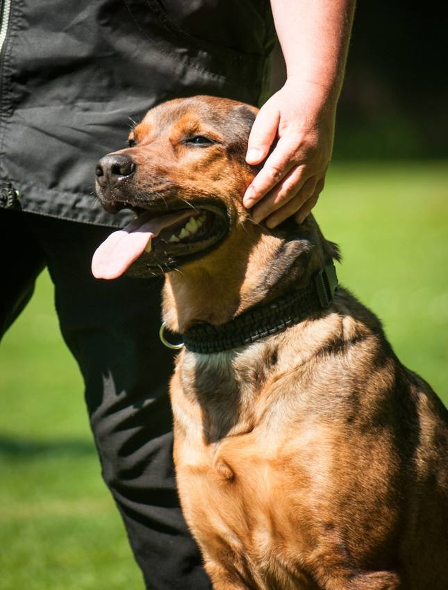

01 · Medizinische Versorgung
Tierarztkosten
Wenn notwendige tierärztliche Behandlungen finanziell schwer zu stemmen sind, prüfen wir, ob Unterstützung möglich ist.

02 · Versorgung im Alltag
Futterhilfe
Wenn das Geld für geeignetes Tierfutter knapp ist, prüfen wir, ob Unterstützung möglich ist.

03 · Zubehör und Grundbedarf
Zubehör & Versorgung
Manchmal fehlen wichtige Dinge für den Alltag. Beschreibe uns, was dein Tier benötigt.

04 · Individuelle Unterstützung
Weitere Hilfe für Tiere
Du hast eine andere schwierige Situation? Erkläre uns dein Anliegen im Anfrageformular.